Maquette visuelle de votre projet
Par Marina Spieldenner le 4/03/2020 à 09:00
La page d'accueil du jeu pour Android Mobile 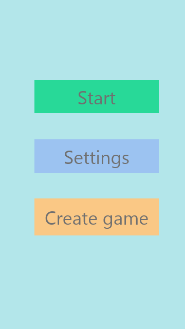
La page d'accueil du jeu pour Android Tablette 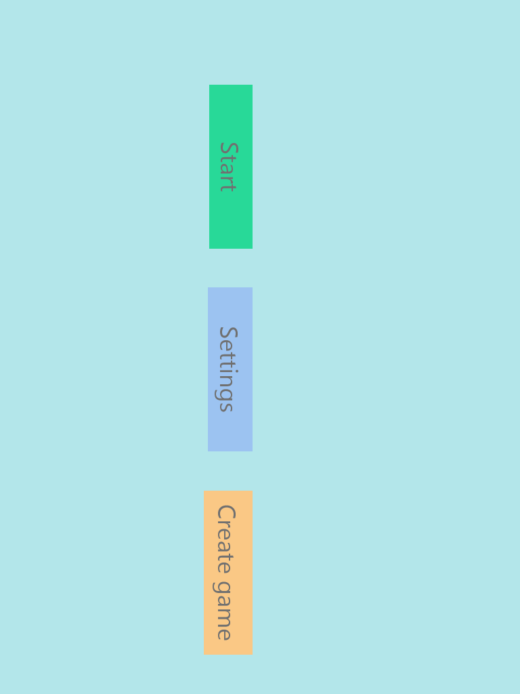
La page d'accueil du jeu pour IPhone 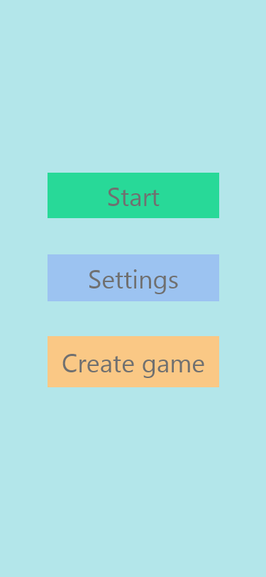
La page d'accueil du jeu pour Descktop 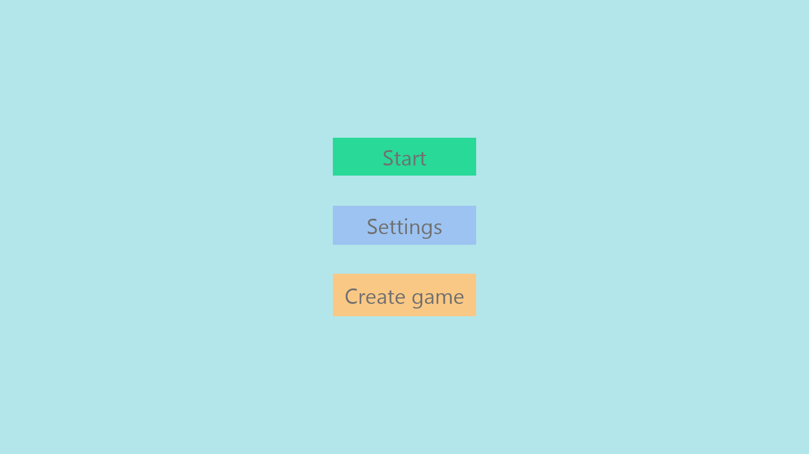
La page d'enregistrement dans le jeu pour Android Mobile 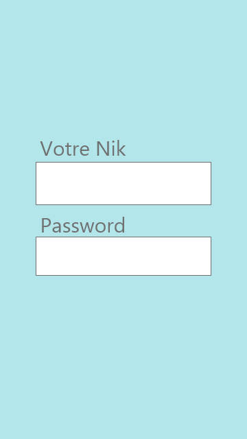
La page d'enregistrement dans le jeu pour Android Tablette 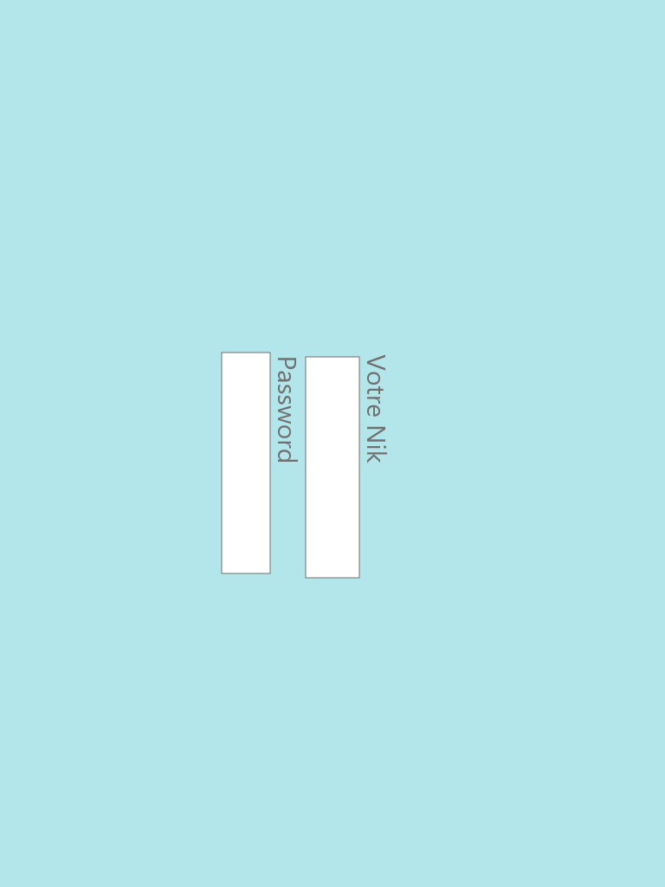
La page d'enregistrement dans le jeu pour IPhone 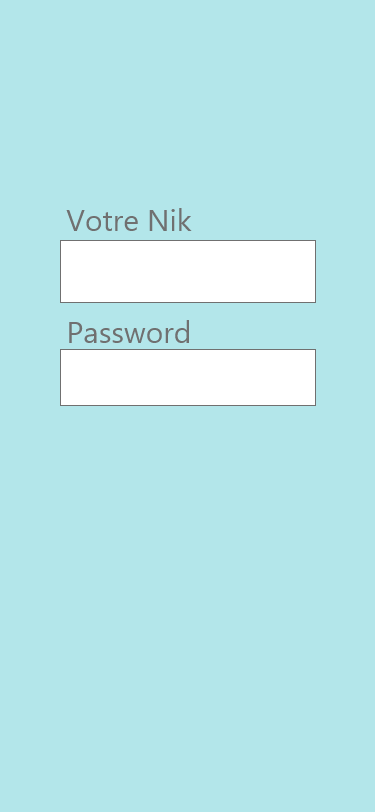
La page d'enregistrement dans le jeu pour Descktop 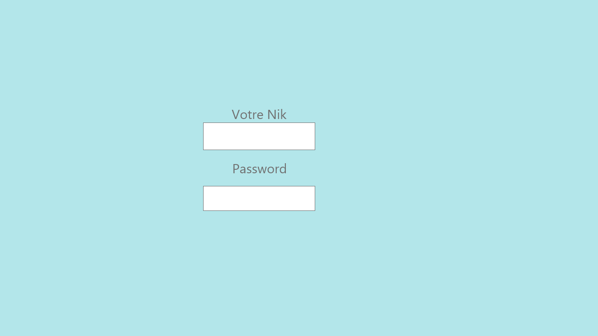
La page d'ajout d'un photo pour Android Mobile 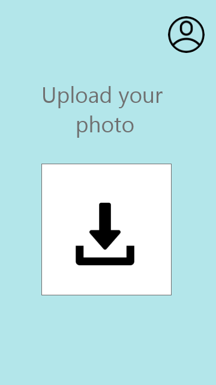
La page d'ajout d'un photo pour Android Tablette 
La page d'ajout d'un photo pour IPhone 
La page d'ajout d'un photo pour Descktop 
La page du jeu en déroulement pour Android Mobile 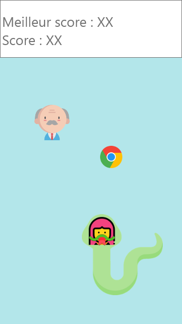
La page du jeu en déroulement pour Android Tablette 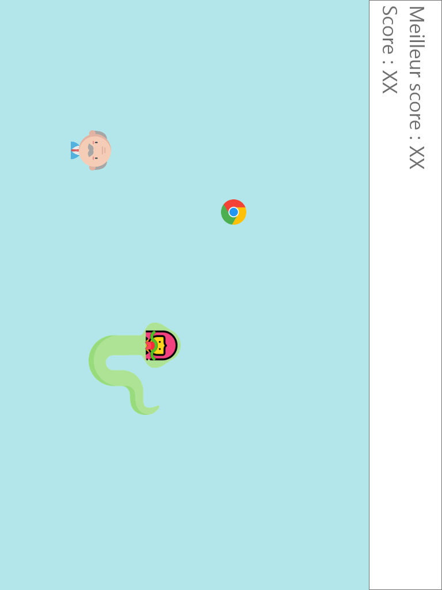
La page du jeu en déroulement pour IPhone 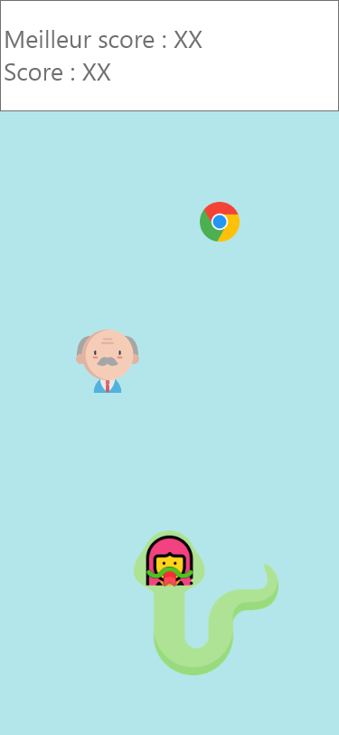
La page du jeu en déroulement pour Descktop 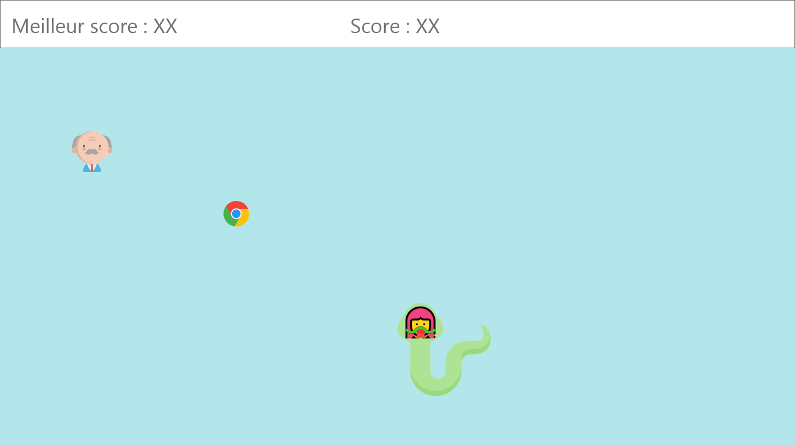
La page de la pause pour Android Mobile 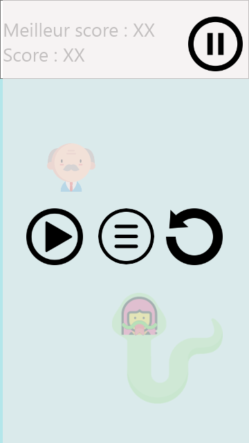
La page de la pause pour Android Tablette 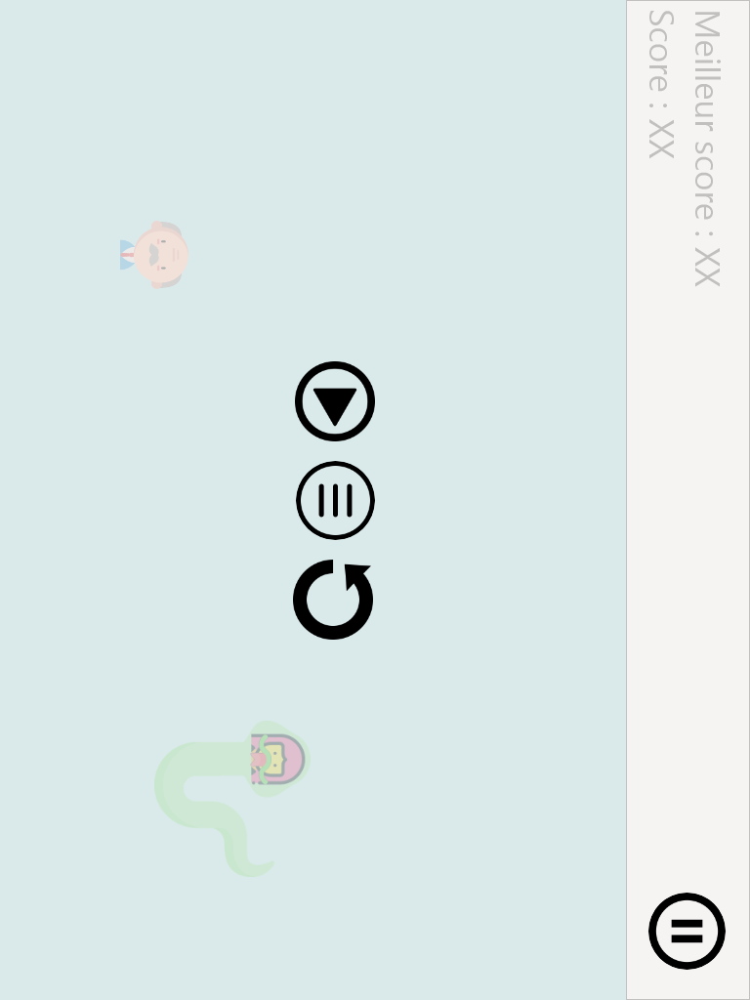
La page de la pause pour IPhone 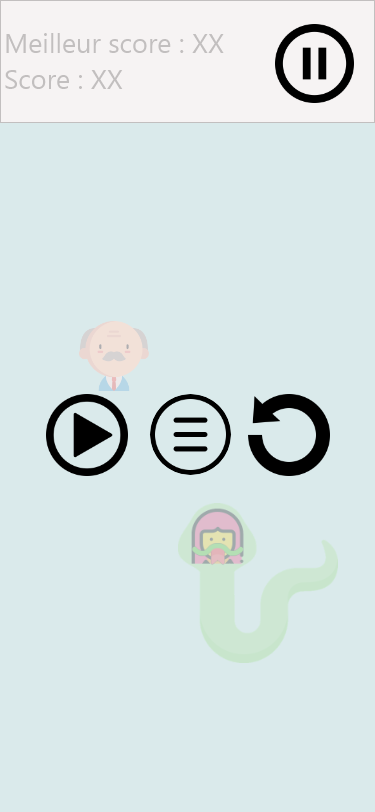
La page de la pause pour Descktop 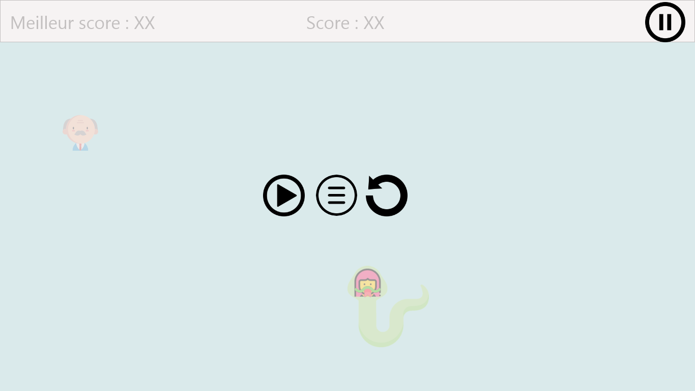